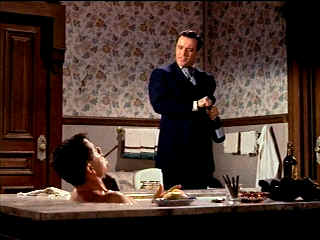

| Cowboy/ B, C+ |
| Columbia/1958/92/FS 1.33 |
The script idea stems from the real life of Frank
Harris. The cowboy initiation is a fine idea and Cowboy executes it
well under the no-nonsense direction of Delmer Daves. You never get the
feeling of excess in this production. It's to the point, it delivers the
messages without massage, and gets on with it. Daves finds the right bits
of business for his actors so that they look perfectly natural in their
environment.
Frank Harris is a Chicago hotel clerk ready for bigger
and better things when cattle man Tom Reese storms into the hotel with his
dusty team of cowboys. Harris is inspired to ask Reese for a chance to
join his next cattle drive, but Reese isn't interested in giving
cowpuncher lessons. But Harris' fate is in the cards and he winds up
entering a tenuous partnership with the tough and truculent Reese.
The romantic elements are logically subservient to the prime entertainment
mission.
 |
|
Reese gets special service
from Harris. ©Columbia
|
There's plenty of down home charm in the Chicago
scenes, from the bawdy entrance of Reese and company to Harris's interview
in the bathroom. The humor is lots of fun and seems natural to the
material. The trail sequences are consistently well-done and unadorned by
excess. Two episodes that stand out are the very straight forward stampede
sequence and the bull ring sequence is equally adept. There aren't any bad
guys in Cowboy; maybe some short tempers and bad nerves, but no bad
guys, and that's an enormous virtue of the material.
Glenn Ford is an excellent trail boss Tom Reese.
Part cowboy, part entrepreneur, Ford captures the toughness in the
negotiating room and on the trail. Jack Lemmon makes a very nice change in
the role of Harris. It almost plays against Lemmon's natural screen
persona, but he's convincing when the change comes about. It's especially
nice since his change evokes a change in Reese.
Heavy and inconsistent grain diminishes the
beauty of Cowboy's image on DVD. Black levels and shadow detail are fine.
Creases and lapels on dark garments are well defined. The transfer
elements appear faded to some degree. Check out the tomatoes in the hotel
buffet spread; far too pale for turn of the century tomatoes, much less
Hollywood tomatoes. Element discoloration crops up from time to time, most
prominently at scene transitions. The transfer is very sharp without any
residual edginess. There are some specs of dirt but they do not intrude on
the image. Flesh tones are somewhat pasty, but it likely related to the
slight element fading. There are a couple of scenes that look like they
might have been panned to encompass the entire scene, but Cowboy
was almost definitely shot 1.33 open matte and likely composed for 1.85
theatrical display, so depending on how protected it was composed would
determine any visual compromises at 1.33. The mono sound is clean and the
music has a nice range. |
|
|
|

Selections from the Feature
Archive include articles on Akira Kurosawa, Frank Darabont, Blonde Bimbos, Hollywood Street Gangs, or Vietnam: The Hollywood Pariah, and many
more....
A Western is a Western is a Western

Place or time it's still a Western from John Ford's Drums Along the Mohawk
to John Sturges' Bad Day at Black Rock.

The Movie Poster
Archive includes extensive poster images from the films of stars like
Susan Hayward, Kirk Douglas, Katharine Hepburn and many more. Our
featured star is Kirk Douglas.

Searchers, The/ A,B

John Wayne invests Ethan Edwards with enormous dignity and determination.
A classic western from director John Ford. Mesmerizingly beautiful.

The major studio vaults are filled with incredible film treasures which
few have seen the light of DVD.
Open the Vaults


Timely DVD reviews and an easy-to-use interface. Weekly
contests.

The National Film Preservation Foundation (NFPF) is the
nonprofit organization created by the U.S. Congress to save America's film
heritage.

The home of Francis Ford Coppola's Zoetrope
Studios has more corridors of interest than you might expect.

The home of John Tisch's invaluable Poster Price Almanac. Every serious poster
collector uses the Almanac as a reference.
|